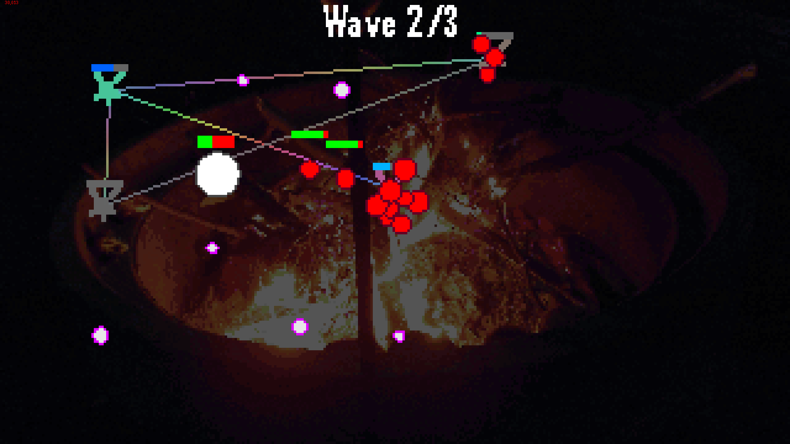

HeadSpace Limited
A Small action Roguelike made for Ludum Dare 54
Play to save your memories
A custom upgrade system was made for this game, as was an audio pooling system
One of the beginning levels
Further Links:
https://ldjam.com/events/ludum-dare/54/headspace-limited
https://ldjam.com
https://holymoleymacaroni.itch.io/headspace-ltd
Related Projects
(jam) Double 0 Negative
(jam) The Great Black Yonder - A Poem by You
(jam) Katchem
(jam) Varrior
(game) Double 0 Negative
(game) The Great Black Yonder - A Poem by You
(game) Katchem
(game) TLM Nation
(game) Varrior
(roguelike) Finding Remote Locations on Grid-Based maps
(roguelike) Double 0 Negative
(roguelike) Varrior